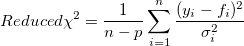
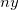
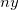

i番目のyデータ、
i番目のyデータ、 i番目のエラーです。データ数が十分に大きいとき、n - pはnに近づき、補正カイ二乗は、ソースデータとフィッティングされたデータとの差と重みによって決定されます。
i番目のエラーです。データ数が十分に大きいとき、n - pはnに近づき、補正カイ二乗は、ソースデータとフィッティングされたデータとの差と重みによって決定されます。
最終更新: 2018/08/08
Origin の非線形曲線フィット機能はフィットの適合度の1つとして補正カイ二乗値を計算し、出力します。フィッティングプロセスに重み付けが含まれていて、補正カイ二乗が1と大きく異なる場合は、不適切な重み付け方法が選択されているかどうかを調べてください。補正カイ二乗が1よりもはるかに小さい場合、それは重み付けが大きすぎることを示している可能性があります。逆も同様です。
なぜを重み付け方法をチェックする必要がありますか？
通常、補正カイ二乗値は、1に近いと良いフィット結果であることを示します。フィッティング中に重み付けが含まれている場合、補正カイ二乗が1に近づくと、観測されたデータとフィッティングされたデータの差が同様の重みを有することが示されます。フィッティング中に重み付けが含まれている場合、補正カイ二乗は次のように計算されます。

ここで、nはデータ数、pは自由度、i番目のyデータ、i番目のエラーです。データ数が十分に大きいとき、n - pはnに近づき、補正カイ二乗は、ソースデータとフィッティングされたデータとの差と重みによって決定されます。
したがって、補正カイ二乗が1と大きく異なる場合、不適切な重み付け方法を示している可能性があります。Originにはいくつかの重み付け方法があります。各方法の式についてはこのページを参照してください。補正カイ二乗が1よりもはるかに小さい場合、それは重み付けが大きすぎることを示している可能性があります。逆も同様です。
クイックサンプル
一連のデータに対して統計的重み付けを使用して非線形曲線フィットを実行し、補正カイ二乗が1に近いフィッティング結果を生成する場合、フィッティング結果が良好であることを示します。次に、10の倍数でyデータをスケールします。統計的重み付け方法は、誤差の変動として〜yの大きさをとり、重みも10でスケーリングされることに留意してください。しかし、重み のある確率変数
のある確率変数 については、適切な重みは次のようになります。
については、適切な重みは次のようになります。
)^2=n^2E(X-E(X))^2=n^2\sigma^2\") .
.したがって、統計的重み付けは、スケーリングされたデータの適切な重みを計算することができません。補正カイ二乗が1よりもはるかに大きい場合も、上記の不適切なことを示しています。補正カイ二乗を1に近づけるには、重みとして~y^2の値を取る機械的重み付けまたは分散 ~ y^2を選択する必要があります。
| Note:
補正カイ二乗に加えて、Originは フィットの適合度を見積もるのに使用できるR二乗値および補正R二乗値のような多くの計算量を出力します。 |
キーワード:適合度, カイ二乗値, 残差二乗和, フィット, フィッティング, 非線形, 変数